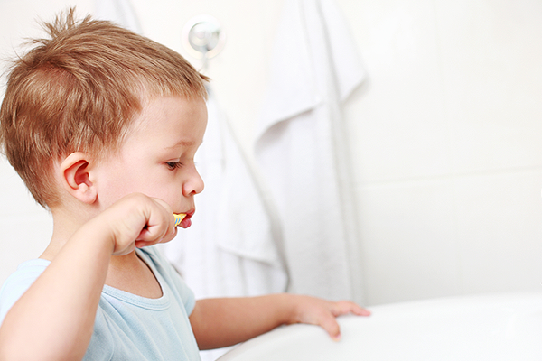

올바른 양치 습관 길러주기
아이들은 칫솔이 이에 닿는 것을 싫어하고 양치 시간을 피하고 싶어 합니다. 부모의 노력으로 스스로 하는 양치질에 성공했다 하더라도 칫솔을 씹거나 장난치면서 제대로 된 양치질을 하지 못하는 경우가 많습니다.
양치 경험이 중요한 이유
-
양치 습관을 결정합니다.
→첫 양치 시간도 기분 좋은 기억이 될 수 있게 -
스스로 양치할 수 있습니다.
→꼭 해야하는 일과 라기 보다는 재미있는 놀이 중의 하나로 인식
양치를 잘 하도록 도와주려면
아이에게 올바른 양치 습관을 들이기 위해서는 이를 어릴 때부터 자연스럽게 받아들일 수 있도록 이가 나기 전부터 물에 적신 거즈 등으로 잇몸, 혓바닥 등을 닦아주는 것이 좋습니다.
또한 양치가 무섭고 힘든 것이 아니라 놀이처럼 받아들일 수 있도록 해야 합니다. 스스로 이를 닦을 수 있을 때가 되면 그림책이나 사운드 북 등으로 올바른 양치 방법을 교육하고 장난감이나 좋아하는 인형을 사용하면 양치 습관에 도움이 됩니다.
또한 양치를 할 때 타이머를 설정해 시간적인 압박을 주지 말고 좋아하는 음악을 틀어주면서 음악이 다 끝날 때까지 ‘치카치카’할 수 있도록 하는 게 좋습니다. 아이들은 다른 사람을 모방하는 걸 좋아하므로 아이 앞에서 부모님이 양치하는 모습을 보여주거나 함께 칫솔질을 하는 것도 양치를 긍정적으로 받아들이는 데 도움이 됩니다.